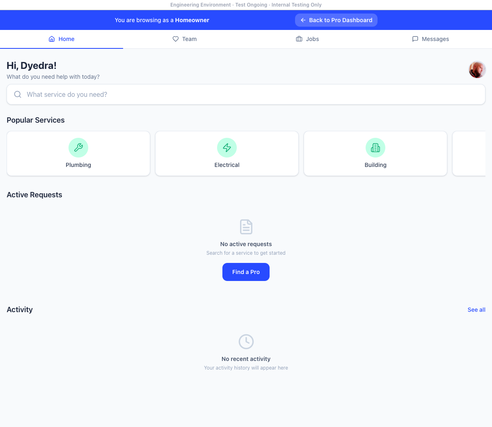
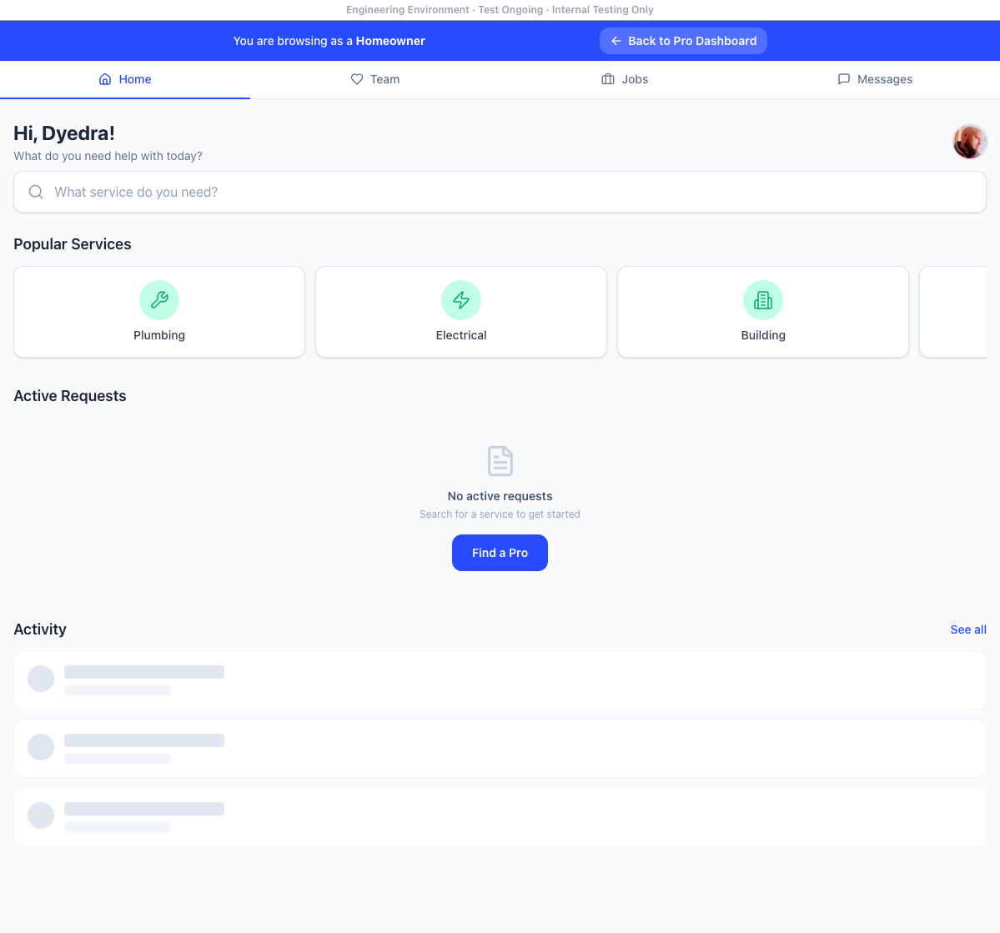
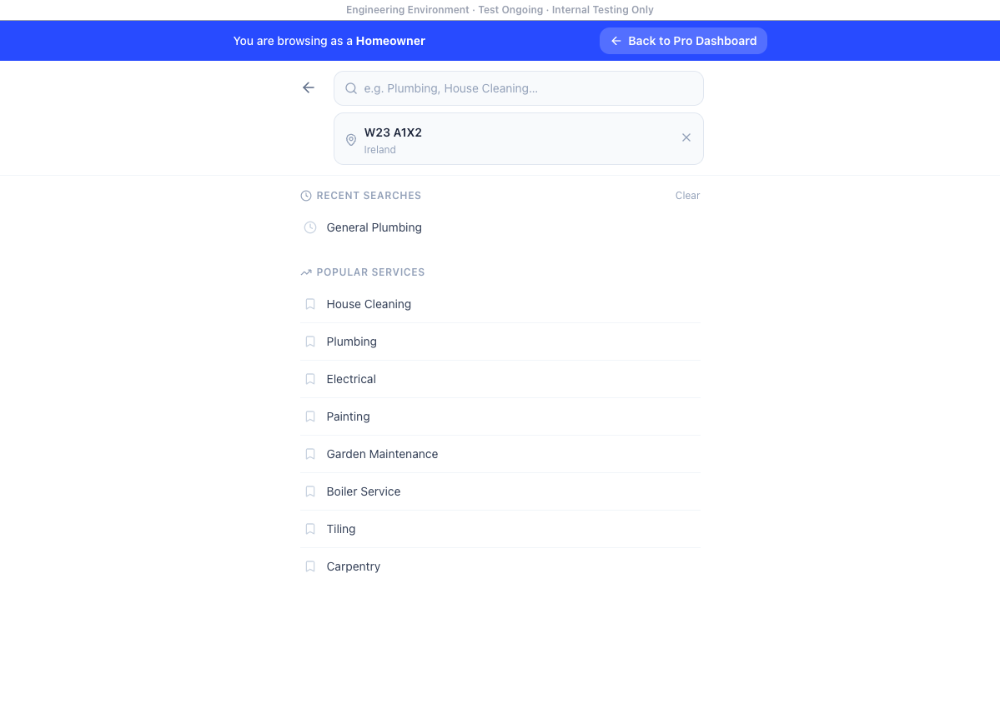
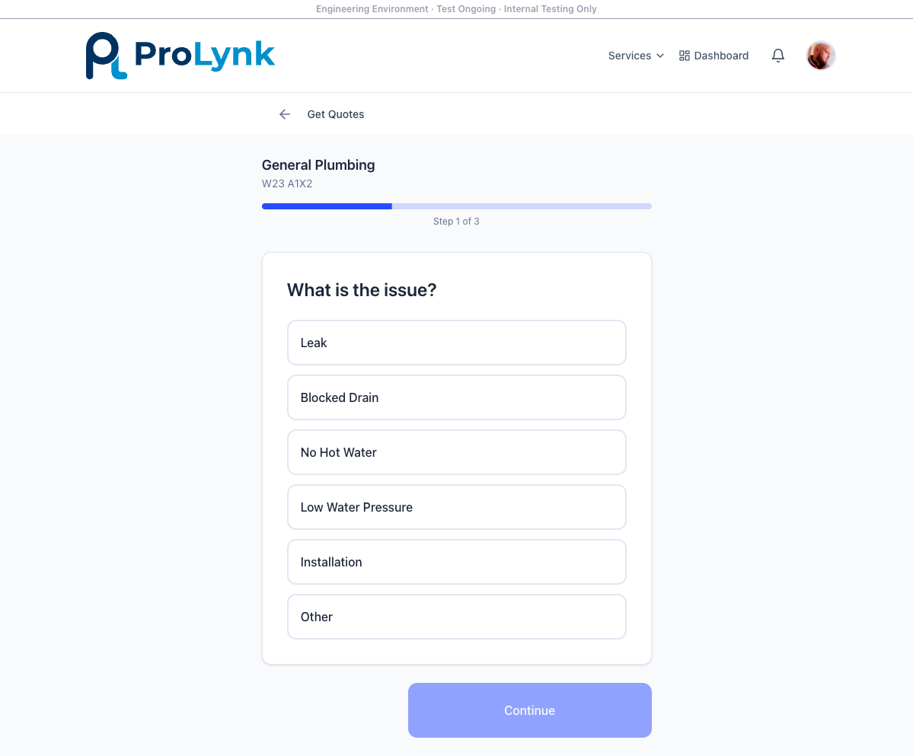
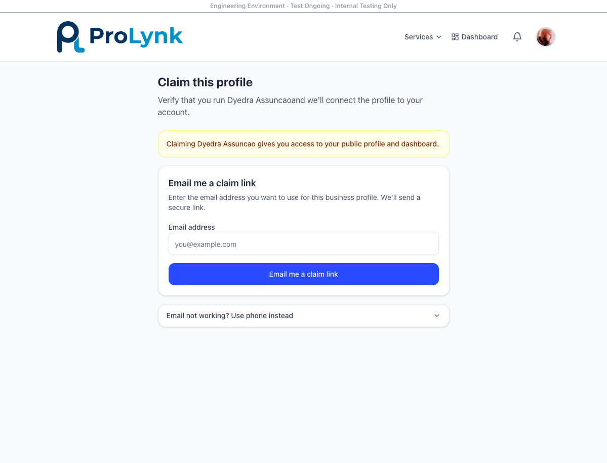
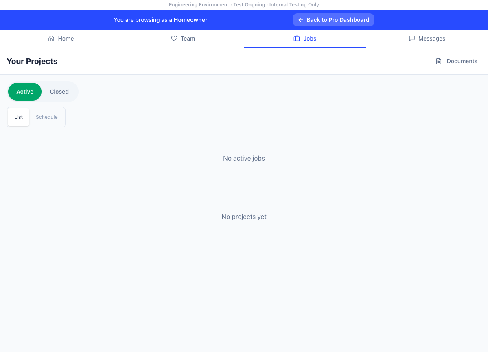
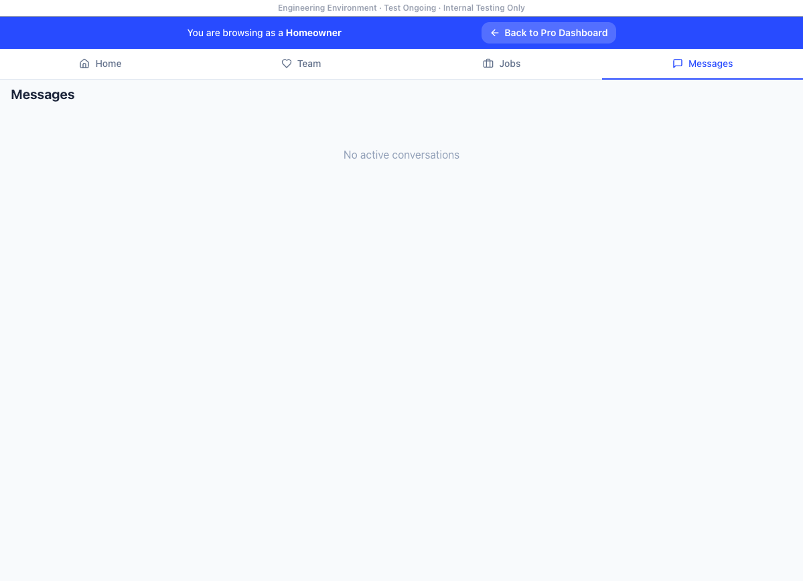

🔍 ProLynk 第二轮测试报告
📊 测试摘要
| 项目 | 结果 |
|---|---|
| 发现新Bug数量 | 4个 |
| Critical | 0个 |
| High | 2个 |
| Medium | 2个 |
| PRO账号登录 | ✅ 成功 |
| HO账号登录 | ❌ 失败（Email not confirmed） |
| PRO/HO角色切换 | ✅ 成功 |
| HO Dashboard | ✅ 正常 |
| 搜索+报价流程 | ⚠️ UI完整但提交可能未成功 |
| PRO Dashboard | ❌ 被Claim Profile阻断 |
| 报价请求创建 | ⚠️ 走完流程但未出现在Active Requests |
📸 浏览器截图记录
1. Login 登录页面
支持两种角色选择（Homeowner / Service Pro），Google一键登录，邮箱密码登录。HO账号报"Email not confirmed"错误。

2. Home Owner Dashboard
登录后HO首页：欢迎语 + 服务搜索 + Popular Services + Active Requests + Activity。布局清晰。

3. 首页（Landing Page）
ProLynk公开首页：Hero区 + 搜索框 + 服务分类。18个服务类型，支持Eircode定位。

4. 服务搜索
搜索Plumbing后显示细分服务：Plumbing system maintenance, Plumbing installation, Plumbing for appliances, General Plumbing等。

5. 报价请求流程（3步）

6. PRO端 — Claim Profile
PRO账号登录后被强制要求认领Profile（Dyedra Assuncao），无法跳过进入PRO Dashboard。

7. HO Jobs 和 Messages


🐛 问题清单
BUG-06 HO账号邮箱未验证无法登录 🟠 HIGH
账号：mlocalpro+cus1@gmail.com
现象：登录时显示红色提示 "Email not confirmed"，无法进入系统
影响：HO测试账号完全无法使用，阻断HO端测试
复现：选择 "I am a Homeowner" → 输入邮箱密码 → 点击Log In → 报错
1. 在Supabase后台手动确认该测试账号邮箱
2. 或提供重新发送确认邮件的功能
修复难度：⭐ 极低（5分钟）
BUG-07 PRO Dashboard被Claim Profile阻断 🟠 HIGH
账号：mlocalpro+clean2@gmail.com
现象：PRO登录后直接跳转到 "Claim this profile" 页面（Dyedra Assuncao），点击Dashboard按钮仍然回到同一页面，无法进入PRO管理面板
影响：无法测试PRO端核心功能（接单、报价、日历、收入等）
URL：/pro/professional-cleaning-leixlip-kildare-dyedra-assuncao/claim
1. 添加"Skip"或"Later"按钮允许PRO跳过claim流程
2. 或为测试账号预先完成claim
3. Dashboard应始终可访问，claim作为可选步骤
修复难度：⭐⭐ 低（30分钟）
BUG-08 报价请求提交后未出现在Active Requests 🟡 MEDIUM
流程：选General Plumbing → 选Leak → 选ASAP → 填写描述 → 点击Submit Quote
现象：提交后跳转回HO Dashboard，Active Requests仍显示"No active requests"，Jobs页面也显示"No active jobs"
影响：核心报价流程可能存在后端问题，或者前端提交未成功
1. 检查后端quote创建API是否正常接收数据
2. 提交后显示成功/失败提示
3. 添加console.log或network面板检查实际请求
修复难度：⭐⭐⭐ 中（需排查前后端）
BUG-09 搜索无Pro列表展示 🟡 MEDIUM
现象：选择服务类型+输入Eircode后，只显示服务细分选项，没有展示可用的Pro列表
影响：HO无法浏览和选择具体的Pro，供需匹配核心链路未闭环
1. 测试环境中没有足够的Pro数据
2. Pro列表功能尚未实现（只有报价请求流程）
3. 需确认产品定位：是"HO发布需求→Pro抢单"模式还是"HO浏览Pro→选择"模式
✅ 做得好的地方（对比第一轮改进）
- ✅ 3步报价流程设计优秀 — 问题类型→时间→描述，步骤清晰不啰嗦
- ✅ PRO/HO角色切换顺滑 — User menu里的"Switch to Homeowner View"一键切换
- ✅ 服务分类层级合理 — 大类→子类→具体问题，层层递进
- ✅ Dashboard导航清晰 — Home / Team / Jobs / Messages 四个核心功能一目了然
- ✅ UI整体完成度高 — 对比第一轮（04-18）有显著进步
- ✅ Jobs页面有List/Schedule视图切换 — 日程管理概念好
- ✅ Documents独立入口 — 文档管理意识到位
🤖 AI功能增强建议
💡 AI差异化方向 — 这是你们的核心竞争力
用户上传照片 + 文字描述 → AI分析问题类型和严重程度 → 自动生成参考价格区间
对标：Thumbtack的"Instant Estimate"，但用AI做得更智能
根据job描述、位置、时间偏好 → 自动匹配最合适的3-5个Pro
考虑因素：距离、专长、评分、当前空闲状态、历史完成率
减少HO的搜索成本，提高成交率
HO上传问题照片 → AI识别问题类型（漏水/电路故障/墙裂等）
自动建议需要什么类型的Pro + 预估严重程度 + 紧急度
很多HO不知道自己需要什么服务，AI帮他们翻译"问题"→"需求"
Pro忙碌时AI自动回复常见问题（"什么时候能来？""大概多少钱？"）
AI翻译功能：爱尔兰英语 ↔ 其他语言
解决Pro响应慢导致的流失问题
从对话和照片中自动提取：问题描述、位置、紧急程度、建议方案
Pro到场前已有完整信息，不用再问一遍
减少重复沟通，提升Pro效率
分析用户评价中的关键词 → 帮Pro了解自己优势和改进方向
帮HO筛选评价真实性（检测虚假评价模式）
建立信任体系的核心工具
🎯 AI功能优先级建议
| 功能 | 优先级 | 开发难度 | 用户价值 | 建议阶段 |
|---|---|---|---|---|
| AI照片诊断 | 🔥 最高 | ⭐⭐ 中 | ⭐⭐⭐⭐⭐ | Phase 1 MVP |
| AI智能估价 | 🔥 最高 | ⭐⭐ 中 | ⭐⭐⭐⭐⭐ | Phase 1 MVP |
| AI智能匹配 | 高 | ⭐⭐⭐ 中高 | ⭐⭐⭐⭐ | Phase 1 |
| AI辅助沟通 | 中 | ⭐⭐ 中 | ⭐⭐⭐ | Phase 2 |
| AI自动工单 | 中 | ⭐⭐⭐ 中高 | ⭐⭐⭐ | Phase 2 |
| AI评价分析 | 低 | ⭐⭐ 中 | ⭐⭐ | Phase 3 |
📌 需要向Daniel确认的事项
❓ 待确认问题
- HO测试账号：mlocalpro+cus1@gmail.com 的邮箱确认链接能否重发？或在Supabase后台直接确认？
- PRO端：PRO Dashboard有没有办法跳过Claim Profile流程？或者帮测试账号完成claim？
- 报价请求：提交后Active Requests为空是bug还是预期行为？后端是否收到数据？
- Pro列表：是否有Pro浏览功能？还是纯靠报价请求模式？
- 产品方向：AI功能你们有计划吗？我们这边可以帮设计AI功能方案
🔧 修复优先级总览（含第一轮遗留）
| Bug ID | 问题 | 严重性 | 来源 | 修复难度 | 预估时间 |
|---|---|---|---|---|---|
| BUG-01 | Signup链接跳Tesla | 🔴 Critical | 04-18 | ⭐ | 1分钟 |
| BUG-06 | HO账号邮箱未验证 | 🟠 High | 04-25 | ⭐ | 5分钟 |
| BUG-07 | PRO Dashboard被Claim阻断 | 🟠 High | 04-25 | ⭐⭐ | 30分钟 |
| BUG-08 | 报价请求提交未生效 | 🟡 Medium | 04-25 | ⭐⭐⭐ | 需排查 |
| BUG-09 | 搜索无Pro列表 | 🟡 Medium | 04-25 | ⭐⭐⭐ | 需确认 |
| BUG-02 | Pro注册需登录 | 🟠 High | 04-18 | ⭐⭐ | 30分钟 |
| BUG-03 | 角色选择不直观 | 🟡 Medium | 04-18 | ⭐⭐ | 1小时 |
| BUG-04 | 确认邮件提示差 | 🟡 Medium | 04-18 | ⭐⭐ | 30分钟 |